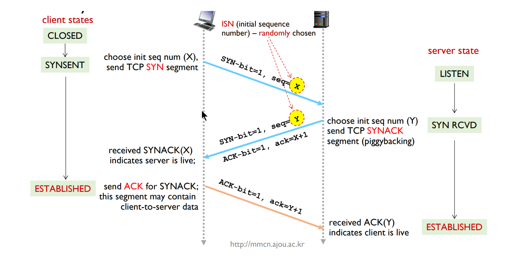
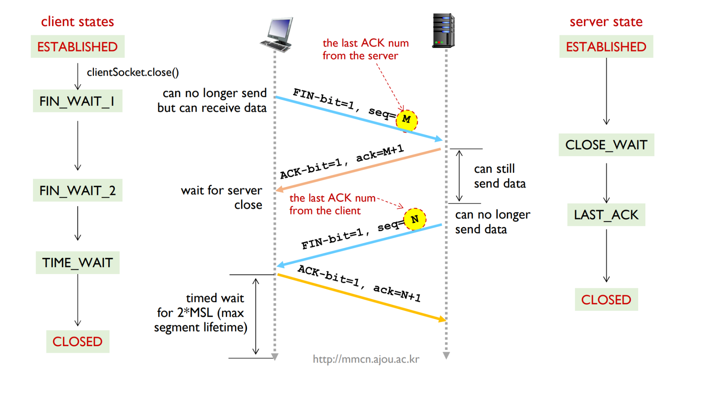
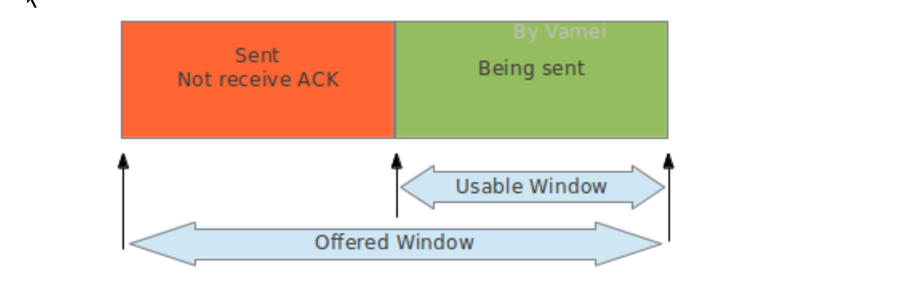
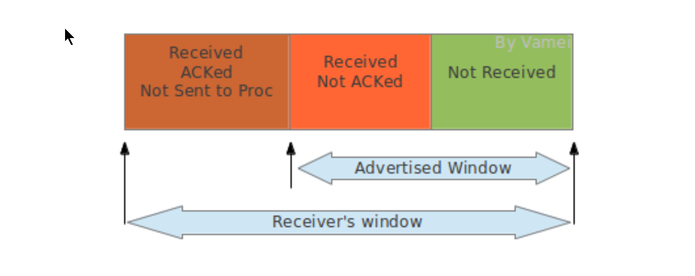
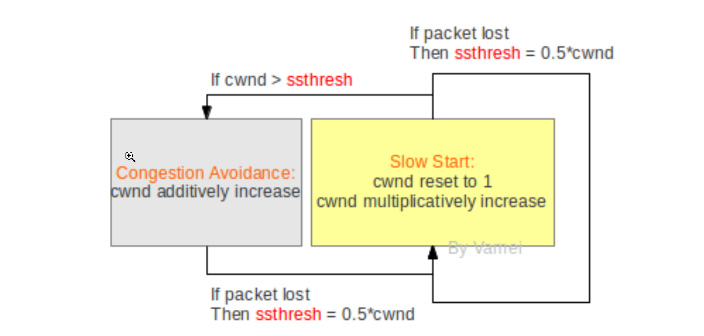
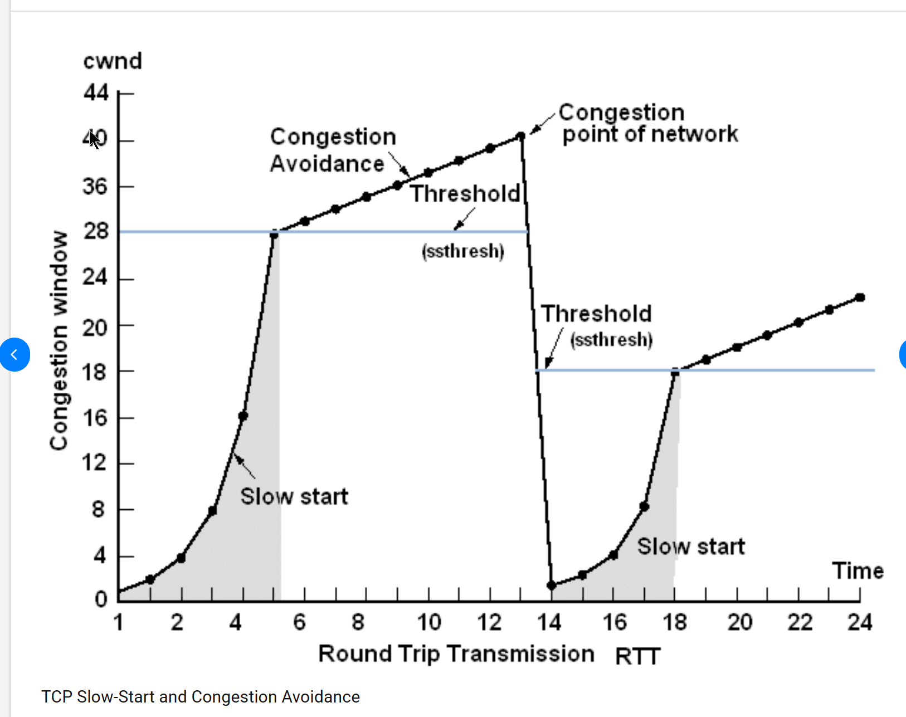
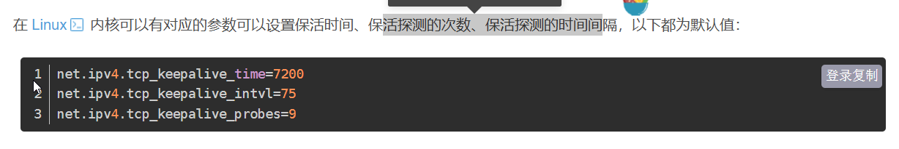

TCP(Transportation Control Protocol)协议与IP协议是一同产生的。事实上，两者最初是一个协议，后来才被分拆成网络层的IP和传输层的TCP。我们已经在UDP协议中介绍过，UDP协议是IP协议在传输层的“傀儡”，用来实现数据包形式的通信。而TCP协议则实现了“流”形式的通信。
流通信
TCP协议虚拟了流通信。流通信的特点是有序，底层IP发送的数据包是无序的，后发出的数据包可能先到，而上层TCP协议确保了数据到达的顺序与流顺序相符。当程序从TCP协议的接口读取数据时，这些数据已经是排列好顺序的“流”了。比如我们有一个大文件要从本地主机发送到远程主机，如果是按照“流”接收到的话，我们可以一边接收，一边将数据流存入文件系统。这样，等到“流”接收完了，硬盘写入操作也已经完成。如果采取UDP的传输方式，我们需要等到所有的数据到达后，进行排序，才能组装成大的文件。这种情况下，我们不得不使用大量的计算机资源来存储已经到达的数据，直到所有数据都达到了，才能开始处理。
TCP需要发送的数据流可能很长，而一次通信能发送的数据量最终受制于连接层的MTU。所以，TCP协议封装到IP包的不是整个数据流，而是TCP协议所规定的片段(segment)。一个TCP片段同样分为头部(header)和数据(payload)两部分。而TCP片段的大小，在通信开始时通过协商MSS(Max Segment Size)来确定。一个TCP片段的大小不会超过MSS,而MSS也不会超过MTU，避免传输过程中的碎片化。
TCP segment最终通过IP数据包发送，所以其到达也是无序的，这就需要在TCP segment中存储片段的排序信息，TCP片段的头部会存有该片段的序号(sequence number)，这样，接收的计算机就可以知道接收到的片段在原数据流中的顺序了。
可靠性
而光有排序信息也是不够的，IP协议不保证数据包一定送达，数据不可达的情况非常多，比如IP包经过太多的路由器接力，达到hop limit；比如路由器太过拥挤，导致一些IP包被丢弃；再比如路由表(routing table)没有及时更新，导致IP包无法送达目的地，而网络层不会对此做任何处理，同时，如果TCP头部的校验不通过，该TCP segment也会被丢弃。TCP通过ACK应答的方式通知发送方我已经收到了哪些片段，而没有被ACK应答的片段，发送方根据某些规则判定这些片段已经丢失，会重复发送。
超时重传
当发送方送出一个TCP片段后，将开始计时，等待该TCP片段的ACK回复,这个计时等待的时间叫做重新发送超时时间(RTO, retransmission timeout)。
发送片段从发送方到接收方的传输，ACK片段从接收方到发送方的传输,整个过程实际耗费的时间称做往返时间(RTT, round trip time)。RTT时间是变动的，TCP协议通过统计RTT，来决定合理的RTO。发送方可以测量每一次TCP传输的RTT (从发送出数据片段开始，到接收到ACK片段为止)，这样的每次测量得到的往返时间，叫做采样RTT(srtt, sampling round trip time)。根据srtt的平均值和标准差计算RTO
快速重传
TCP协议有可能在计时完成之前启动重新发送，也就是利用快速重新发送(fast-retransmission)。快速发送机制如果被启动，将打断计时器的等待，直接重新发送TCP片段。
由于IP包的传输是无序的，所以接收方有可能先收到后发出的片段，也就是乱序(out-of-order)片段。乱序片段的序号并不等于最近发出的ACK回复号。已接收的数据流和乱序片段之间将出现空洞(hole)，也就是等待接收的空位。比如已经接收了正常片段5,6,7，此时又接收乱序片段9。这时片段8依然空缺，片段8的位置就是一个空洞。
TCP协议规定，当接收方收到乱序片段的时候，需要重复发送ACK。比如接收到乱序片段9的时候，接收方需要回复ACK。回复号为8。此后接收方如果继续收到乱序片段(序号不是8的片段)，将再次重复发送ACK=8。当发送方收到3个ACK=8的回复时，发送方推断片段8丢失。即使此时片段8的计时器还没有超时，发送方会打断计时，直接重新发送片段8，这就是快速重新发送机制(fast-retransmission)。
快速重新发送机制利用重复的ACK来提示空洞的存在。当重复次数达到阈值时，认为空洞对应的片段在网络中丢失。快速重新发送机制提高了检测丢失片段的效率，往往可以在超时之前探测到丢失片段，并重复发送丢失的片段。
TCP连接
TCP是面向连接的通信，在通信之前，双方要建立连接，操作系统会为建立的接连分配资源，比如发送缓存和接受缓存。而在通信结束后，双方需要断开连接来释放资源。
连接的建立

连接的终结

Client发送出最后的ACK回复，该ACK可能丢失。Server如果没有收到ACK，将不断重复发送FIN片段。所以Client不能立即关闭，它必须确认Server接收到了该ACK。Client会在发送出ACK之后进入到TIME_WAIT状态。Client会设置一个计时器，等待2MSL的时间。如果在该时间内再次收到FIN，那么Client会重发ACK并再次等待2MSL。所谓的2MSL是两倍的MSL(Maximum Segment Lifetime)。MSL指一个片段在网络中最大的存活时间，2MSL就是一个发送和一个回复所需的最大时间。如果直到2MSL，Client都没有再次收到FIN，那么Client推断ACK已经被成功接收，则结束TCP连接。
效率和流量控制
如果TCP实现ACK应答的方式是通过发送方保持发送一个片段->等待ACK->发送一个片段->等待ACK...的单线工作方式，而虽然保证了TCP通信的可靠性，但同时牺牲了网络通信的效率。在等待ACK的时间段内，我们的网络都处于闲置(idle)状态。我们希望有一种方式，可以同时发送出多个片段。
滑窗
滑窗机制被用于提高通信的效率，同时控制通信的流量。 发送方和接收方都分别有发送缓存和接受缓存。发送缓存中存储待发送的数据和已经发送没有被ACK的数据。接受缓存存储已经接受的数据，这些数据部分已经回复ACK了，但是没有被上层应用读取。有些还没有回复ACK,可能是乱序先到的。而发送方的滑窗中的数据是可以一次性发送的，而不是一个一个发送并等待ACK。随着发送数据的ACK被收到，滑窗向右移动，更多的数据可以被一次性发送。接受方的滑窗为接受缓存的剩余空间的大小，随着接受到的数据被应用层接受，这个窗口的大小随之变动，代表接受方处理数据的效率，通信的双方在每次通信中都会通知对方自己的接口窗口的大小，发送方也据此调整发送窗口的大小。


接收方将advertised window的大小通知给发送方，从而指导发送方修改offered window的大小。接收方将该信息放在TCP头部的window size区域，发送方在收到window size的通知时，会调整自己滑窗的大小，offered window至少小于等于advertised window。这样，发送窗口变小，数据发送速率降低，从而减少了接收方的负担。
零窗口
advertised window大小有可能变为0，这意味着接收方的buffer满了。发送方收到大小为0的advertised window通知时，停止发送数据。 为此，发送方会在零窗口后，不断探测接收方的窗口。窗口探测(window probe)时，发送方会向接收方发送包含1 byte数据的TCP片段，并等待ACK回复(该ACK回复包含有window size)。如果探测结果显示窗口依然为0，发送方会等待更长的时间，然后再次进行窗口探测，直到TCP传输恢复。
白痴窗口综合症
Silly Window Syndrome is a problem that can occur in TCP (Transmission Control Protocol) where data is sent in small segments, which is inefficient and degrades the performance of the network.
This problem can occur due to the following behaviors:
Sender side: The sender generates and sends data one byte at a time. Even if the sender has more data to send, it sends out each byte as soon as it's generated, leading to a lot of small segments.
Receiver side: The receiver advertises a window size increment for each byte freed in the receive buffer. This means that the sender might send a segment for each byte that the receiver can accept, leading to a lot of small segments.
The solution to this problem is an algorithm known as Nagle's Algorithm. This algorithm involves the sender accumulating data in a buffer and sending it all at once, rather than sending it one byte at a time. On the receiver side, the solution is to wait until there's a sufficient amount of space in the receive buffer before advertising a window size increment.
By avoiding the transmission of small segments, these solutions help to improve the efficiency and performance of TCP communication.
拥塞控制
如果网络的通信本身很堵塞，tcp的片段丢失，由于tcp有重传机制，反而会有更多的tcp片段涌入，导致堵塞崩溃的出现。 TCP的拥塞控制(congestion control)的功能就是为了避免这一情况。 tcp除了通过advertised window size控制发送窗口大小，也通过congestion window size控制发送窗口大小。事实上，发送窗口的大小取决于这两个窗口的最小值。
Congestion Window congestion window总是处于两种状态的一个。这两种状态是: 慢起动(slow start)和拥塞避免(congestion avoidance)。

上图是概念性的。实际的实施要比上图复杂，而且根据算法不同会有不同的版本。cwnd代表congestion window size。我们以片段的个数为单位，来表示cwnd的大小 (同样是概念性的)。
Congestion window从slow start的状态开始，cwnd都需要重置为初始值1。发送方每接收到一个正确的ACK，就会将congestion window增加1，这样congestion window的增长将是指数级的。
当congestion window的大小达到某个阈值ssthresh时，congestion进入到congestion avoidance状态，发送方在每个窗口所有片段成功传输后，将窗口尺寸增加1(实际上就是每个RTT增加1)。所以在congestion avoidance下，cwnd增长变为线性增长。
如果在congestion avoidance下有片段丢失，重新回到slow start状态，并将ssthresh更新为cwnd的一半。
我们看到，sshthresh是slow start到congestion avoidance的切换点。而片段丢失是congestion avoidance到slow start的切换点。一开始sshthresh的值一般比较大，所以slow start可能在切换成congestion avoidance之前就丢失片段。这种情况下，slow start会重新开始，而ssthresh更新为cwnd的一半。
总的来说，发送速率总是在增长。如果片段丢失，则重置速率为1，并快速增长。增长到一定程度，则进入到慢性增长。快速增长和慢性增长的切换点(sshthred)会随着网络状况(何时出现片段丢失)更新。通过上面的机制，让发送速率处于动态平衡，不断的尝试更大值。初始时增长块，而接近饱和时增长慢。但一旦尝试过度，则迅速重置，以免造成网络负担。

keepalive
TCP提供了保活机制。定义一个时间段，在这个时间段内，如果没有任何连接相关的活动，TCP 保活机制会开始作用，每隔一个时间间隔，发送一个探测报文，该探测报文包含的数据非常少，如果连续几个探测报文都没有得到响应，则认为当前的 TCP 连接已经死亡,系统内核将错误信息通知给上层应用程序

- tcp_keepalive_time=7200：表示保活时间是 7200 秒（2小时），也就 2 小时内如果没有任何连接相关的活动，则会启动保活机制
- tcp_keepalive_intvl=75：表示每次检测间隔 75 秒；
- tcp_keepalive_probes=9：表示检测 9 次无响应，认为对方是不可达的，从而中断本次的连接。
也就是说在 Linux 系统中，默认最少需要经过 2 小时 11 分 15 秒才可以发现一个「死亡」连接 如果两端的 TCP 连接一直没有数据交互，达到了触发 TCP 保活机制的条件，那么内核里的 TCP 协议栈就会发送探测报文。
如果对端服务是正常工作的。当 TCP 保活的探测报文发送给对端, 对端会正常响应，这样 TCP 保活时间会被重置，等待下一个 TCP 保活时间的到来。
如果对端服务崩溃，或由于网络原因导致报文不可达。当 TCP 保活的探测报文发送给对端后，石沉大海，没有响应，连续几次，达到保活探测次数后，内核会报告该 TCP 连接已经死亡。
如果对端服务被重启，原连接已失效。新的tcp服务不认识探测报文，会发送RST报文，客户端的连接被断开。
我们可以通过给socket设置SO_KEEPALIVE属性使用该机制
int enable = 1;
int idle = 10; // idle time before start sending keepalive probes
int interval = 5; // interval between successive probes
int maxpkt = 3; // number of unacknowledged probes to send before considering the connection dead
// Enable keepalive
if (setsockopt(sock, SOL_SOCKET, SO_KEEPALIVE, &enable, sizeof(int)) < 0) {
perror("setsockopt(SO_KEEPALIVE) failed");
}
// Set the idle time
if (setsockopt(sock, IPPROTO_TCP, TCP_KEEPIDLE, &idle, sizeof(int)) < 0) {
perror("setsockopt(TCP_KEEPIDLE) failed");
}
// Set the interval
if (setsockopt(sock, IPPROTO_TCP, TCP_KEEPINTVL, &interval, sizeof(int)) < 0) {
perror("setsockopt(TCP_KEEPINTVL) failed");
}
// Set the maximum number of keepalive packets
if (setsockopt(sock, IPPROTO_TCP, TCP_KEEPCNT, &maxpkt, sizeof(int)) < 0) {
perror("setsockopt(TCP_KEEPCNT) failed");
}